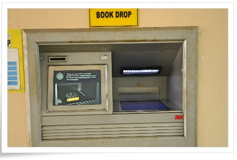

Book Drop

Process of returning books is more convenient lately
because of Book Drop Machines that are operated 24 hours a day.
This latest technology facilitates users to return books at any time and their records will be updated automatically.
Location: Outside the library (at main entrance)
BACK
This latest technology facilitates users to return books at any time and their records will be updated automatically.
Location: Outside the library (at main entrance)